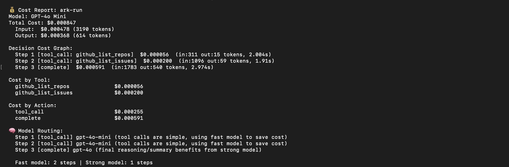

ARK routes each step to the right model, tracks cost per decision, and learns what works. Single Go binary. Open source.

ARK sits between your agent and the LLM provider. It optimizes every decision for cost, quality, and speed.
Tool calls go to cheap models. Reasoning goes to strong models. The router learns from failures and self-improves across runs.
Every step has a dollar amount. Cost feeds back into tool ranking — expensive unreliable tools get demoted automatically.
MCP servers dump 60K+ tokens into every prompt. ARK loads 3–5 relevant tools per task. Context goes to reasoning.
Successful tools rise. Failing tools drop. Query patterns are remembered. Routing decisions persist across restarts.
When tools are available, the LLM cannot answer without using them. Zero hallucinated answers across 30 stress test runs.
Define HTTP tools in agent.yaml with ${ENV_VAR} support. ARK handles allowlisting, validation, and learning. No code.
ARK doesn't replace your tools or your models. It makes every interaction between them more efficient.
| Without ARK | With ARK | |
|---|---|---|
| Context usage | 60,468 tokens on schemas | ~80 tokens (99.9% reduction) |
| Model selection | One model for everything | Right model per step, learned |
| Cost visibility | Monthly API bill | Per-step, per-tool, per-action |
| Tool ranking | Manual, static | Learned from every execution |
| Hallucination | LLM guesses without tools | Grounding gate enforced |
| Setup | Python + SDKs + frameworks | Single Go binary, zero deps |
Add a strategy to your agent.yaml. ARK handles everything else.
No API keys needed for demos. Clone, build, run.